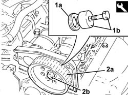

1036L32 FRONT OIL SEAL for camshaft housing camshaft - replace with timing belt removed
- Path
- Procedures > 10 ENGINE > 1036 TIMING SYSTEM > 1036L CAMSHAFTS (2) IN CAMSHAFT HOUSING (1) > 1036L32 FRONT OIL SEAL for camshaft housing camshaft - replace with timing belt removed
- Kind
- repair procedure (removal / refitting; the operation number is the code)
- Applies to
- engines: 2.4 JTD 20V; all production periods
- Interactive page
- https://sloeber94.github.io/elrnDB-lThss/en/#/850287
Applies to: engines: 2.4 JTD 20V; all production periods
 Removing
Removing
 Refitting
Refitting- Unscrew the exhaust timing control pulley bolt loosened previously.
- Remove the exhaust side timing drive pulley.
- Prise up and remove the exhaust side camshaft front oil seal.
Applies to: engines: 2.4 JTD 20V; all production periods
Refitting
Removing1. Postion a new exhaust side camshaft front oil seal (1a) using fitting tool (1b).
 | Description | Code | Function |
|---|---|---|---|
1b | Fitting tool | 1.870.896.800 | Fitting camshaft oil seal |
2. Fit timing pulley (2a) and screw in the bolt (2b) without tightening it.
